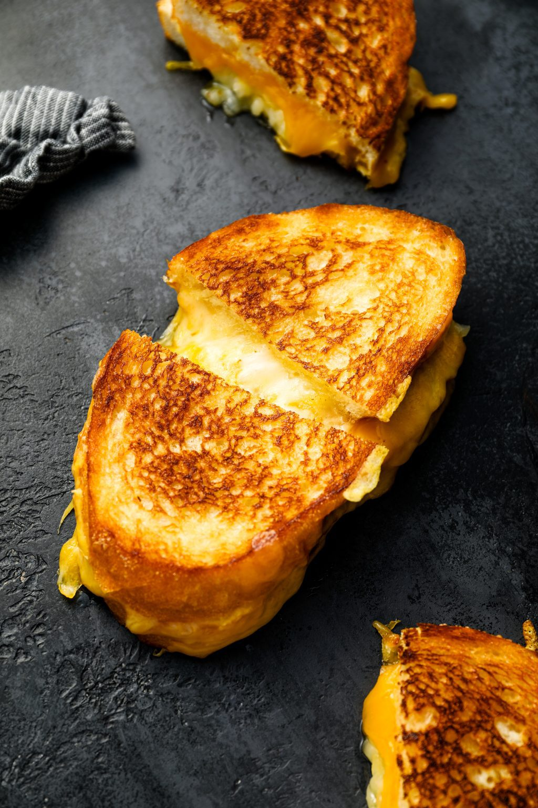

Grilled cheese

A simple childhood comfort food
Ingredients
- 2 slices favorite bread. I prefer a thick Texas toast.
- 2 slices favorite cheese. A combination can work wonderfully. Gouda and cheddar are my go-to.
- 1 tbs butter
Steps
- Heat a frying pan over medium heat. Butter both slices of bread and assemble sandwich with cheese between bread slices and buttered sides on the outside.
- Place sandwich into warmed pan. Let sit until golden brown, flip and repeat.
- Remove from heat, cut at a diagonal and enjoy! Serve with tomato soup for best experience.